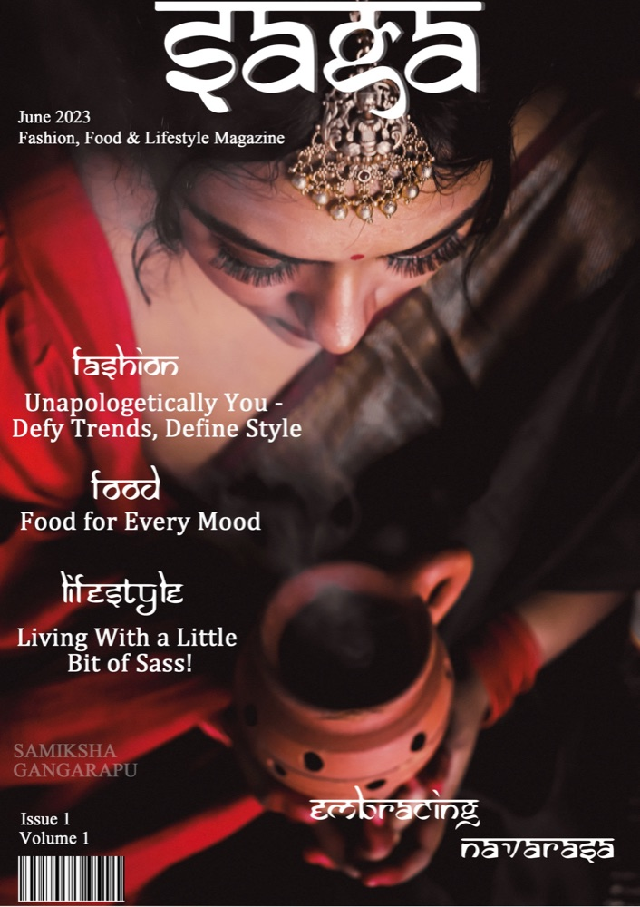
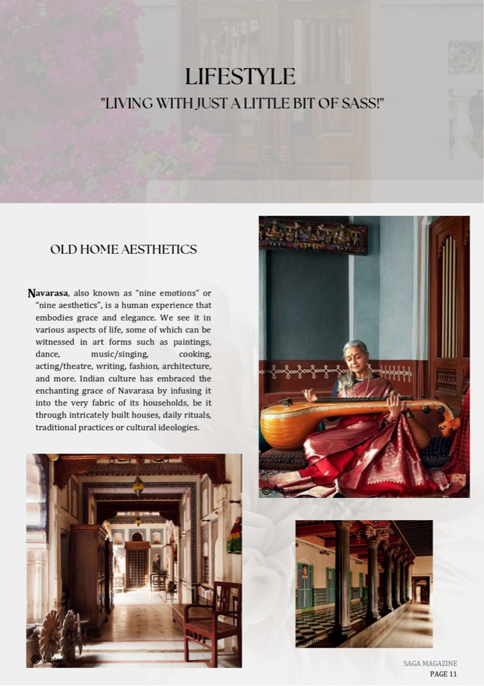
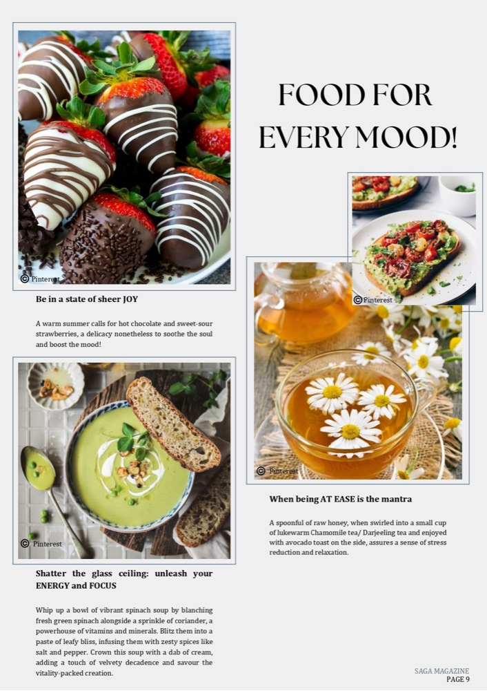
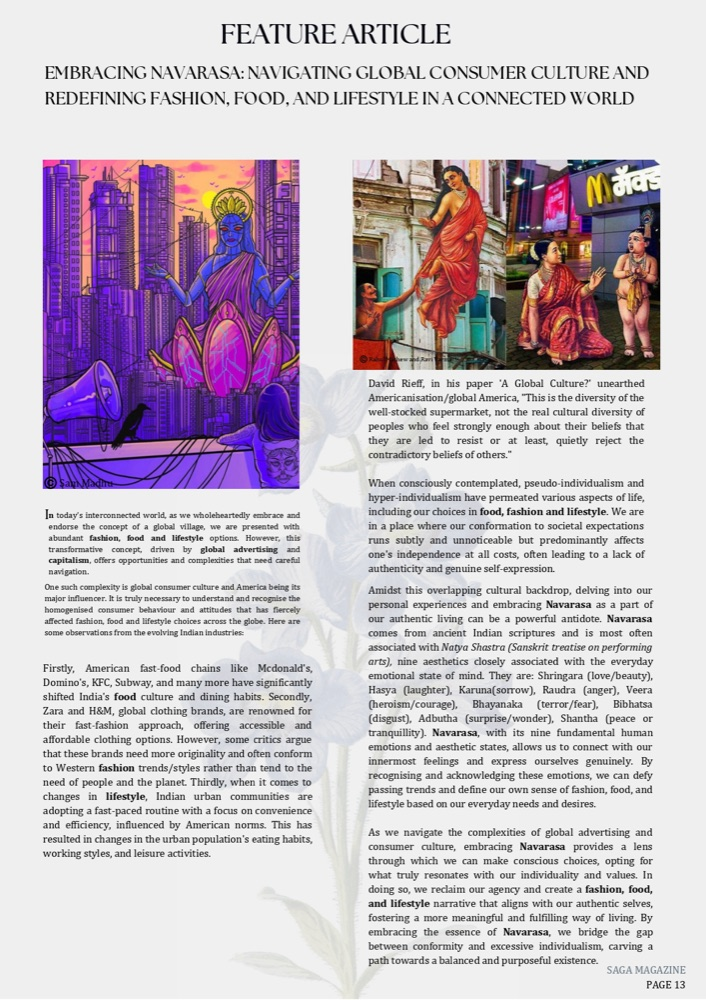

Freelance Projects
Collaborating with digital marketing agencies, publications, and independent companies as a freelance content writer — translating ideas, brands, and projects into clear, engaging narratives through blogs, long-form articles, newsletters, and digital content.
Saga Magazine
For Saga Magazine, I contributed long-form editorial writing developed around the theme of Navarasa, exploring how emotions shape fashion, food, and lifestyle. My work focused on interpreting cultural aesthetics and everyday practices through storytelling, connecting traditional Indian philosophies with contemporary expressions — translating abstract emotional states into accessible, reflective narratives for a lifestyle readership.




CMR University
I created educational blog articles for CMR University that translated academic programs, technology integration, and career pathways into accessible, student-focused narratives.
- The Importance of Research in M.Tech in Data Science Programs
- Why is Pursuing a BBA in Digital Marketing a Smart Career Move?
- Navigating the Digital Canvas: The Role of Technology in Modern BSc Animation Programs
Merak Studio
Merak Studio is led by Architect Rajan. I worked closely on translating architectural projects into narrative-driven articles, focusing on design intent, process, and project context — writing the work as stories to make complex design concepts accessible and engaging.
Projects: Varthana · Equinity · DIAGEO
Phoenix One Bangalore West
For Phoenix One Bangalore West, I developed lifestyle and real estate blog content focused on interiors, home décor, and rental insights.
- Modern Wardrobe Designs for Your Bedroom
- Eight Ways to Decorate Your Home for a Stylish Christmas
- Renting Opportunities in Premium Flats — A Smart Investment Choice
Brigade Hospitality
I curated monthly blog content for Brigade Hospitality that captured the experiences offered across its resorts and clubs. The writing focused on weddings, wellness, and lifestyle — presenting each space as a setting for meaningful moments.
- A Perfect Wedding Day Timeline at Signature Club
- Say 'I Do' at the Woodrose Club — Your Perfect Wedding Venue Awaits
- How Brigade Hospitality Sports Club Promotes a Healthy Lifestyle in Bangalore
What clients say
“One of Sanjana's standout qualities is her dependability. She consistently meets deadlines and has been a tremendous asset in times of urgency, always willing to go the extra mile to ensure timely delivery.” — Kruthika Durairaj, Co-founder, GroCat
“Sanjana's writing has always been accurate and completely meets all of the client's requirements. She is a highly professional, dependable, and self-assured writer, and I would recommend her for any type of content requirement.” — Joicy Anjalin, Content Co-ordinator, Ralecon